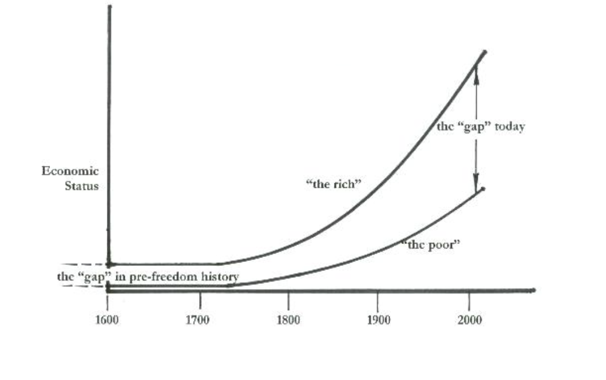

We have created a world so complex, that the common citizen cannot even begin to understand the cause-effect relationships of the present variables - let alone trying to take decisive action to prevent any unintended consequences. The world is changing and we must adapt or we will be left behind.
The world is changing.
For better or for worse, we are now entering a time in human civilization where our growth is akin to a car driving up a mountain really fast. And the higher we get, the further the clouds block our vision of where we are going.
There might be clear skies up ahead or we might drive straight of a cliff.
The good news is we are driving. And if we choose, we can slow down the car until we have a better idea of the road up ahead.
But the issue is, decision making is a 2-step process.
Being acquainted with sufficient relevant information
Acting in the direction that reflects our conclusions from the information
And I fear we have created a world so complex, that the common citizen cannot even begin to understand the cause-effect relationships of the present variables - let alone trying to take decisive action to prevent any unintended consequences.
Even in spite of the revolutionary free access of all information through the internet, the knowledge gap is much like the wealth gap.

Based on the disproportionate knowledge distribution, when it comes to reliable decision making of national and global magnitudes, it is literally impossible for the majority to contribute in a productive manner.
But that is all fine, that is precisely why we have a government - to take responsibility for guiding its society through times of uncertainty.
But what happens when people with the power to guide change in the right direction, either have much shorter time horizons for prioritizing issues to deal with or, and even worse, have not even acquainted themselves, and by definition, cannot even comprehend the gravity of the issues that they have simply deemed not worth their time?
You can see the direct effects of precisely this phenomenon through the monumental events that are the Trump Presidency and Brexit.
I believe it’s incredibly unfair to expect the common man to not only learn up on complex matters emerging in other parts of the world and speak up, in a reliable manner, on issues that will not help him/her get through months end. They have enough to deal with.
And like mentioned before, our political leaders are far too caught up on the “game of politics” to lead the way on solving real issues. Issues that get more blurry the more you look into them.
I will say it again. We have created a world far too complex for the average Homo Sapien to comprehend. And like, quite literally, the history of the universe has taught us, complexity will never cease to rise.
If our civilization as a whole does not rise in knowledge in a proportionate manner, we will perish. It could be physically, mentally, psychologically or all of the above.
You may be surprised, in agreement, or simply confused at what you have just read. I will elaborate on exactly the issues I have thus far been referring to.
But before I do so, I do want to highlight there are secondary and tertiary problems India2 plans to solve. These include the immense opacity & inefficiency of the philanthropic sector of India, the lack of truth in the history we teach our own children about our civilization, the abundant influence of religion in political matters, and lastly the susceptibility of people through digital media.
This is not to say any of these issues are less important than the first, but I stress on the first because I believe the lack of knowledge is the root cause of the other issues, and not resolving that in a timely manner may not even give us a fighting chance to solve the rest.
An app that one, hosts courses teaching the fundamentals of essential knowledge every human being must be aware of, and two, a crowdfunding platform. The courses will be priced at 10 Rs/month. All profits will be used to fund projects selected by the user from the crowdfunding projects.
On one hand, this knowledge problem seems to be being tackled by many through the funding of public schools and similar initiatives. However, when it comes to scaling to numbers where it really matters, the incremental manpower needed per one person’s education is simply not sustainable.
We plan to solve this by leveraging the internet. Now, as of 2018 roughly half the country, a whopping 500 million people have access to the internet. And that number is increasing.
So in essence, we will launch the largest and most simple public education campaign. With the hope that at least the right questions can begin to be asked.
We will provide accessible, comprehensible, and affordable online courses, a consumer trend that is also on the rise, on the bare minimum of topics that are absolutely essential for every human being on this planet to be aware of. Users will be able to download our app or simply visit our website.
The content we plan to have during the launch are the following:
1. English 2. Business a. Financial Literacy b. Exponential Technologies 3. Digital Literacy a. The Internet, The Computer & everything in between. 4. History a. Big history b. India's history 5. Human Psychology a. Dogma, Doctrine and its implication on the world. b. Theory of Knowledge
To be a national standard set for the quality of philanthropy carried out in the country and to be the solid foundation any citizen needs to fulfill their full potential.
To be a national standard for the quality of philanthropy carried out in the country and to be the solid foundation any citizen needs to fulfill their full potential. India2 intended to take advantage of the following:
1. India’s Culture
a. India has histrocally been a country of great innovators and learners
b. India is now the most philanthropic country.
i. We believe good must always come from the government but from the people as well.
A philosophy, that we are proud to say, is prevalent in our culture. Our goal is to optimize it to be as effective as possible.
2. India’s large population and the growing popularity of crowdfunding
a. Since the inception of crowdfunding in India, 500Cr+ Rupees has been raised.
By creating a positive feedback loop of citizens learning and directly contributing to the development of social welfare simultaneously, India2 could become the catalyst that speeds up India’s progress. If even 1% of the 1 billion of our country adopt this service, it could allow progress at an unprecedented pace in providing solutions for problems that the bureaucracy of governments has been unable to address. Look, we are not saying that this is the only hope we have for a better future. Throughout history, there have always been a plethora of people pursuing contradicting agendas. Fortunately, every single time so far, and even sometimes when it seemed like we had passed the point of no return, the good has prevailed. But for the first time ever, all it takes is one person to end it for all of us; any one of the new technologies in the wrong hands could mean the end of civilization as we know it. The mere quantitative advantage of goodness is not enough anymore. We must take it into our own hands and start being precautionary rather than reactionary. And now, we have a plan. By no means is it perfect, but, as far as we know, its the only plan we have that is pursuing a solution to the problems of the bigger picture.
Email: sidsanghvi7@gmail.com
Email: rishisurana@Hotmail.com
Email: amanko@bu.edu
India 1 was destroyed by the British, this is us rising from the ashes.